source_dir <- "./data/"
states_file_path <- file.path(source_dir,
"us49_states_geo_tigris.rds")
states_geo <- readRDS(states_file_path)[[1]]
counties_file_path <- file.path(source_dir,
"us49_counties_geo_tigris.rds")
counties_geo <- readRDS(counties_file_path)[[1]]Extreme Heat/Cold Events Area Trend Analysis
Loading the base spatail data set including Counties and States boundaires
Loading the aggregate extreme events data set
dat_path <- file.path(source_dir,
"Counties_compiled_admin_geo_ehe_ece_sf_2008_2022.rds")
file_size <- file.info(dat_path)$size
dat <- readRDS(dat_path)[[1]]Calculating the average area with complete yearly area records
Overall area
dat_table = dat %>% st_drop_geometry()
## Adding years with no event to the dataset
lookup_table <- dat_table %>%
select(GEOID, NAME, STUSPS, STATE_NAME) %>%
distinct() %>%
filter(!is.na(NAME) & !is.na(STUSPS) & !is.na(STATE_NAME))
fill_na_with_lookup <- function(dat_table, lookup_table, column) {
na_rows <- is.na(dat_table[[column]])
lookup_values <- lookup_table[match(dat_table$GEOID[na_rows], lookup_table$GEOID), column]
dat_table[[column]][na_rows] <- lookup_values
return(dat_table)
}
year_range <- data.frame(year_numerical = 2008:2022)
unique_geoids <- unique(dat$GEOID)
year_geoid_combinations <- expand.grid(year_numerical = year_range$year_numerical, GEOID = unique_geoids)
## Overall
county_yearly_area_hectare <- dat_table %>%
group_by(GEOID,NAME, STATE_NAME, year_numerical) %>%
summarize(avg_impacted_to_total_ratio = mean(impacted_to_total_ratio))`summarise()` has grouped output by 'GEOID', 'NAME', 'STATE_NAME'. You can
override using the `.groups` argument.dat_area_all <- merge(year_geoid_combinations, county_yearly_area_hectare, by = c("year_numerical", "GEOID"), all = TRUE)
dat_area_all["avg_impacted_to_total_ratio"] <- lapply(dat_area_all["avg_impacted_to_total_ratio"], function(x) ifelse(is.na(x), 0, x))
dat_area_all <- fill_na_with_lookup(dat_area_all,
lookup_table, "NAME")
dat_area_all <- fill_na_with_lookup(dat_area_all,
lookup_table, "STATE_NAME")
#linear regression and calcualte percentage change
lm_area_all <- dat_area_all %>%
group_by(GEOID, NAME, STATE_NAME) %>%
do(model = lm(avg_impacted_to_total_ratio~ year_numerical, data = .))
slopes_all <- lm_area_all %>%
rowwise() %>%
mutate(slope = coef(model)[["year_numerical"]],
p_value = summary(model)$coefficients["year_numerical","Pr(>|t|)"],
r_squared = glance(model)$r.squared)Warning: There were 3 warnings in `mutate()`.
The first warning was:
ℹ In argument: `p_value = summary(model)$coefficients["year_numerical",
"Pr(>|t|)"]`.
ℹ In row 2810.
Caused by warning in `summary.lm()`:
! essentially perfect fit: summary may be unreliable
ℹ Run `dplyr::last_dplyr_warnings()` to see the 2 remaining warnings.hist(slopes_all$p_value)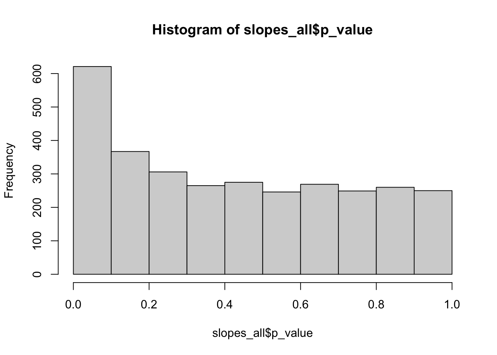
hist(slopes_all$slope)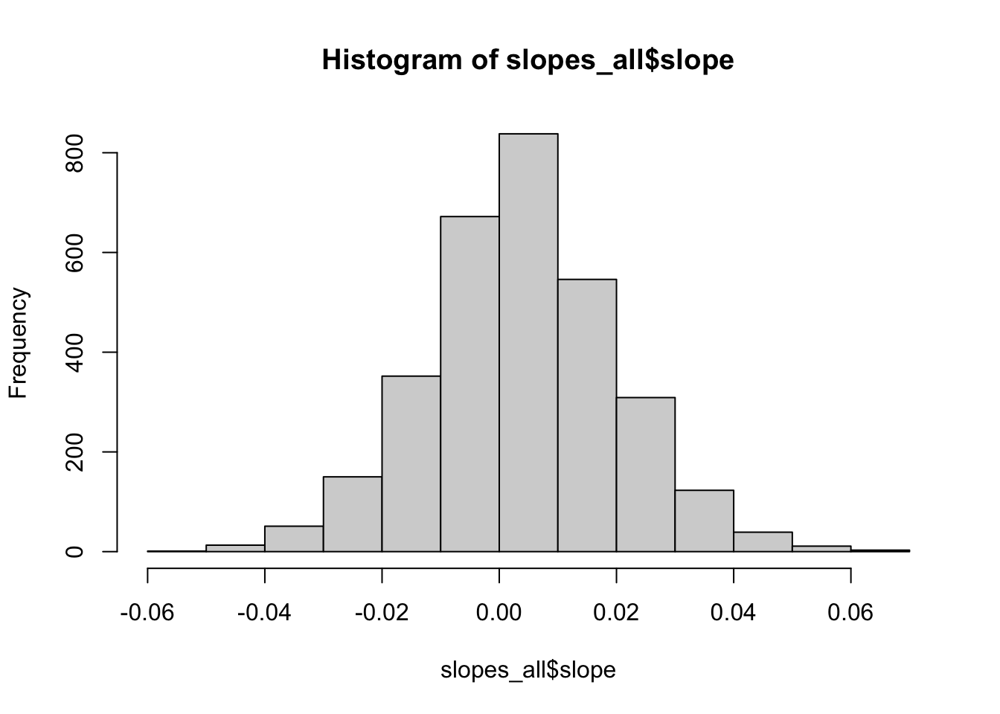
hist(slopes_all$r_squared)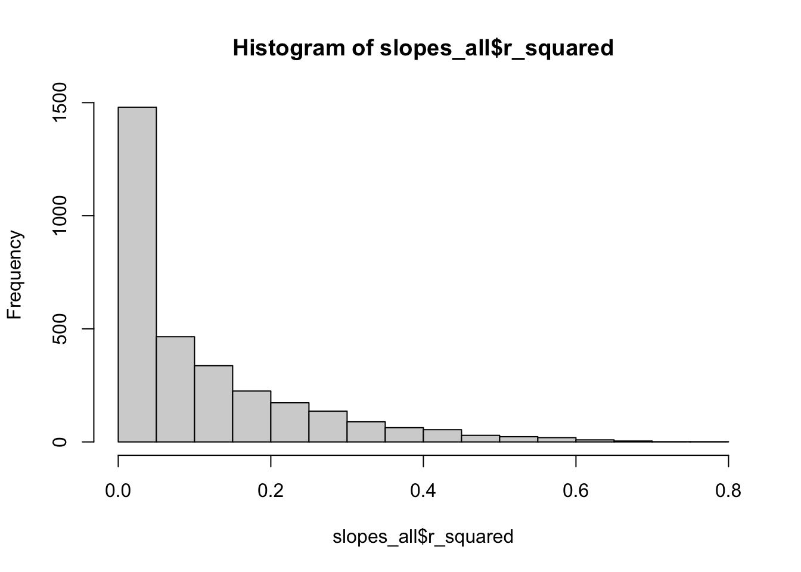
Map
#slopes_cut = slopes_all %>% filter(!(p_value > 0.5))
# Merge with geometry data
county_boundaris_catalog_all <- merge(counties_geo,
slopes_all %>% st_drop_geometry(),
by.x="GEOID",
by.y="GEOID",
all.x = TRUE,
all.y = TRUE,
suffix = c("","_sp")) %>% st_as_sf()
# area all map
ggplot() +
geom_sf(data = county_boundaris_catalog_all,
aes(fill = slope), color = NA,
lwd = .1) +
scale_fill_distiller(palette = "RdBu",
limits = c(-0.065, 0.065),
breaks = c(-0.05, 0, 0.05),
) +
geom_sf(data = states_geo, fill = NA, color = "grey", size = 0.01, alpha = 0.2) +
labs(fill = "Area") +
theme_void() +
theme(legend.position = "bottom")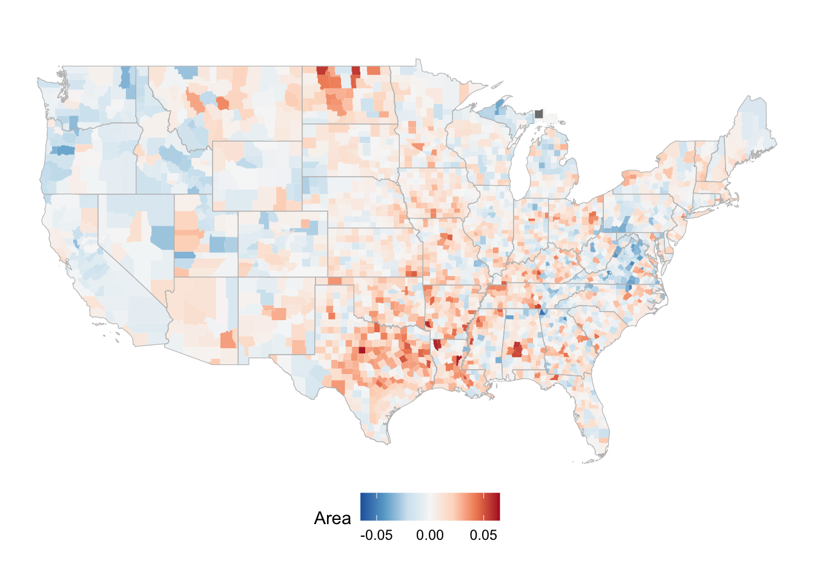
Extreme Heat Events
county_ehe_area_hectare <- dat_table %>%
filter(event_type == "Extreme Heat Event") %>%
group_by(GEOID,NAME, STATE_NAME, year_numerical) %>%
summarize(avg_impacted_to_total_ratio = mean(impacted_to_total_ratio))`summarise()` has grouped output by 'GEOID', 'NAME', 'STATE_NAME'. You can
override using the `.groups` argument.dat_area_ehe <- merge(year_geoid_combinations, county_ehe_area_hectare, by = c("year_numerical", "GEOID"), all = TRUE)
dat_area_ehe["avg_impacted_to_total_ratio"] <- lapply(dat_area_ehe["avg_impacted_to_total_ratio"], function(x) ifelse(is.na(x), 0, x))
dat_area_ehe <- fill_na_with_lookup(dat_area_ehe,
lookup_table, "NAME")
dat_area_ehe <- fill_na_with_lookup(dat_area_ehe,
lookup_table, "STATE_NAME")
#linear regression and calcualte percentage change
lm_area_ehe <- dat_area_ehe %>%
group_by(GEOID, NAME, STATE_NAME) %>%
do(model = lm(avg_impacted_to_total_ratio ~ year_numerical, data = .))
slopes_ehe <- lm_area_ehe %>%
rowwise() %>%
mutate(slope = coef(model)[["year_numerical"]],
p_value = summary(model)$coefficients["year_numerical","Pr(>|t|)"],
r_squared = glance(model)$r.squared)hist(slopes_ehe$p_value)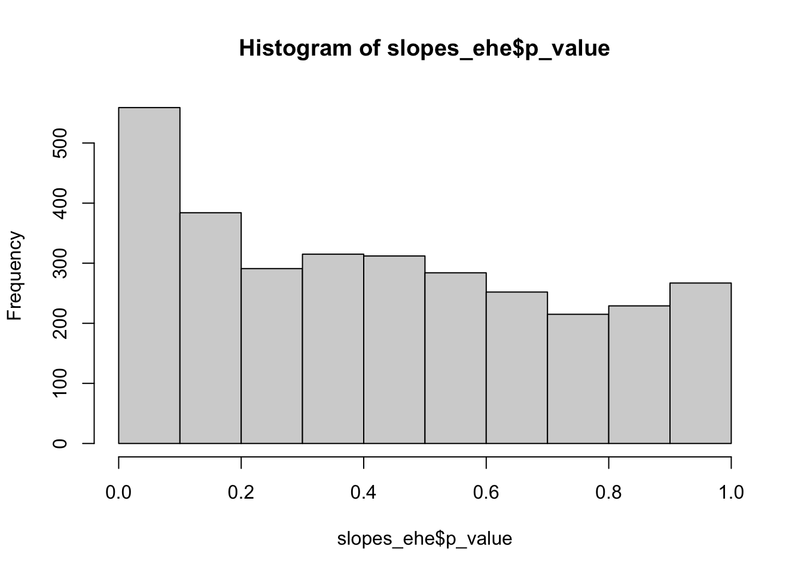
hist(slopes_ehe$slope)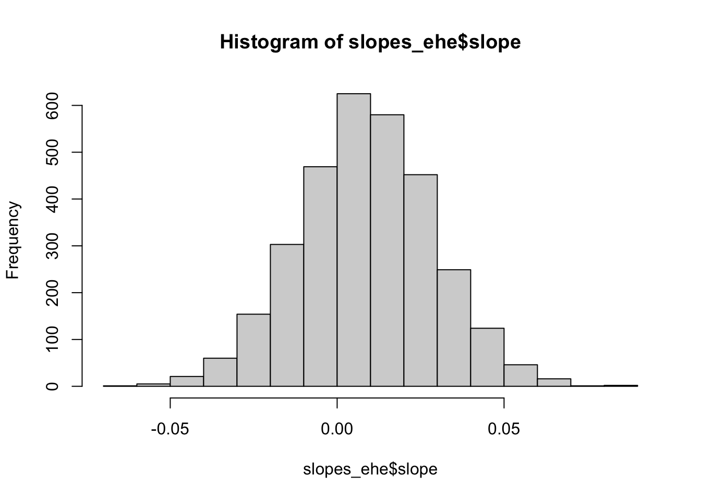
hist(slopes_ehe$r_squared)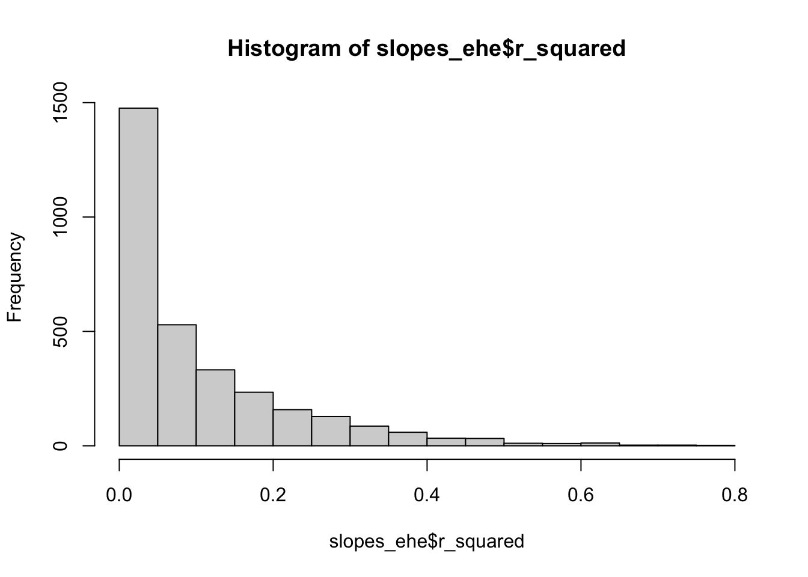
Map
#slopes_ehe_cut = slopes_ehe %>% filter(p_value < 0.05)
# Merge with geometry data
county_boundaris_ehe_catalog <- merge(counties_geo,
slopes_ehe %>% st_drop_geometry(),
by.x="GEOID",
by.y="GEOID",
all.x = TRUE,
all.y = TRUE,
suffix = c("","_sp")) %>% st_as_sf()
# Area EHE map
ggplot() +
geom_sf(data = county_boundaris_ehe_catalog,
aes(fill = slope),color = NA,
lwd = .1) +
scale_fill_distiller(palette = "RdBu",
limits = c(-0.085, 0.085)
) +
geom_sf(data = states_geo, fill = NA, color = "grey", size = 0.5) +
labs(fill = "Area EHE") +
theme_void() +
theme(legend.position = "bottom")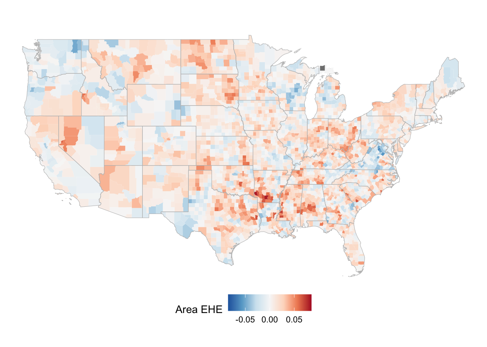
Extreme Cold Events
county_ece_area_hectare <- dat_table %>%
filter(event_type == "Extreme Cold Event") %>%
group_by(GEOID,NAME, STATE_NAME, year_numerical) %>%
summarize(avg_impacted_to_total_ratio = mean(impacted_to_total_ratio))`summarise()` has grouped output by 'GEOID', 'NAME', 'STATE_NAME'. You can
override using the `.groups` argument.dat_area_ece <- merge(year_geoid_combinations, county_ece_area_hectare, by = c("year_numerical", "GEOID"), all = TRUE)
dat_area_ece["avg_impacted_to_total_ratio"] <- lapply(dat_area_ece["avg_impacted_to_total_ratio"], function(x) ifelse(is.na(x), 0, x))
dat_area_ece <- fill_na_with_lookup(dat_area_ece,
lookup_table, "NAME")
dat_area_ece <- fill_na_with_lookup(dat_area_ece,
lookup_table, "STATE_NAME")
#linear regression and calcualte percentage change
lm_area_ece <- dat_area_ece %>%
group_by(GEOID, NAME, STATE_NAME) %>%
do(model = lm(avg_impacted_to_total_ratio ~ year_numerical, data = .))
slopes_ece <- lm_area_ece %>%
rowwise() %>%
mutate(slope = coef(model)[["year_numerical"]],
p_value = summary(model)$coefficients["year_numerical","Pr(>|t|)"],
r_squared = glance(model)$r.squared)hist(slopes_ece$p_value)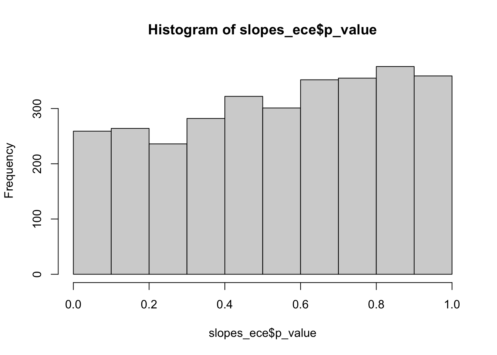
hist(slopes_ece$slope)
hist(slopes_ece$r_squared)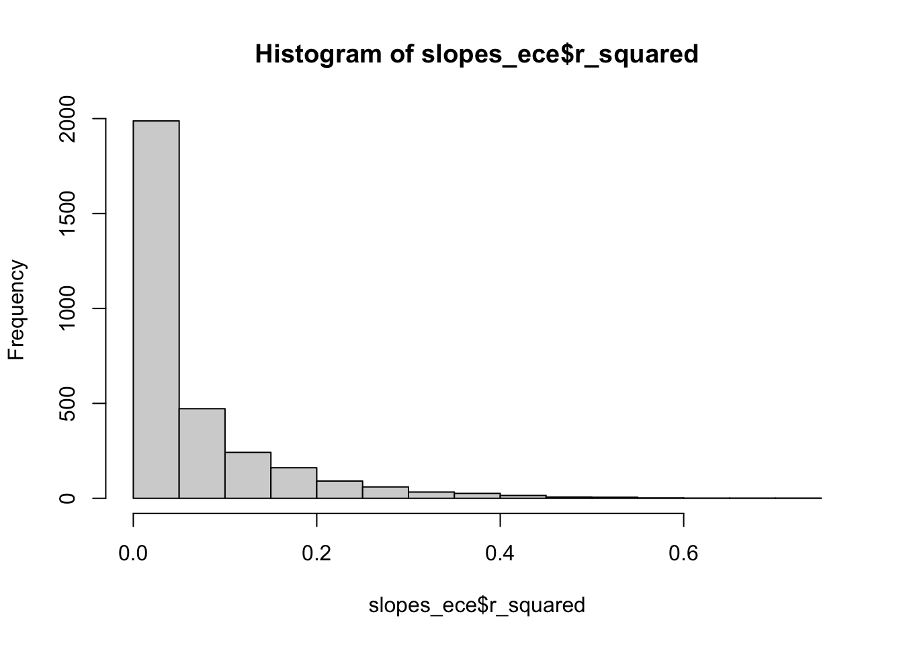
Map
#slopes_ece_cut = slopes_ece %>% filter(p_value < 0.05)
# Merge with geometry data
county_boundaris_ece_catalog <- merge(counties_geo,
slopes_ece %>% st_drop_geometry(),
by.x="GEOID",
by.y="GEOID",
all.x = TRUE,
all.y = TRUE,
suffix = c("","_sp")) %>% st_as_sf()
# Area ECE map
ggplot() +
geom_sf(data = county_boundaris_ece_catalog,
aes(fill = slope), color = NA,
lwd = .1) +
scale_fill_distiller(palette = "RdBu",
limits = c(-0.071, 0.071)
) +
geom_sf(data = states_geo, fill = NA, color = "grey", size = 0.5) +
labs(fill = "Area ECE") +
theme_void() +
theme(legend.position = "bottom")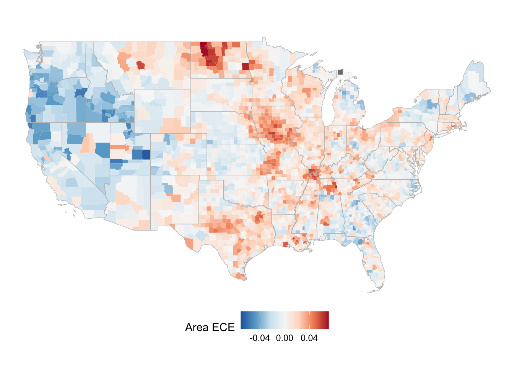